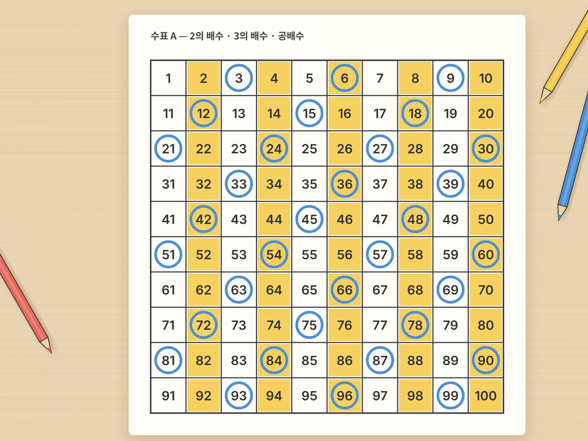

전체 단원 › 실험·활동 › 5학년 1학기 수학
1~100 수표 배수 색칠

1부터 100까지 수표에서 2, 3, 5의 배수를 색칠해 무늬를 찾고, 겹치는 칸에서 공배수와 소수를 발견해요.
40분 · 난이도 ★★☆ 보통
준비물
- 1~100 수표 도안 — 같은 수표 3장이 들어 있어요 (A4 2장)
- 색연필 3색 이상 — 배수마다 다른 색으로 칠해요
- 병뚜껑이나 바둑돌 (선택) — 색칠 대신 칸을 덮어도 돼요
하는 방법
- 2의 배수 칠하기
첫 번째 수표에서 2, 4, 6…처럼 2씩 뛰어 세며 노란색으로 칠해요. 어떤 무늬가 생기나요? - 3의 배수 표시하기
같은 수표에 3, 6, 9…를 파란 동그라미로 표시해요. 노란색과 파란 동그라미가 겹친 수를 찾아요. - 공배수 찾기
두 표시가 겹친 6, 12, 18…이 2와 3의 공배수예요. 가장 작은 것은 무엇인가요? 그게 최소공배수예요. - 약수 찾기
두 번째 수표에서 24를 고르고, 24를 나누어떨어지게 하는 수(1, 2, 3, 4, 6, 8, 12, 24)를 모두 색칠해요. - 소수 체 거르기
세 번째 수표에서 1을 지우고, 2를 남긴 채 2의 배수를 모두 지워요. 3, 5, 7도 같은 방법으로 해요. 남은 수가 소수예요.
생각해 봐요
- 2의 배수와 5의 배수를 모두 칠하면 겹치는 칸은 어디인가요?
- 24와 36의 공약수는 무엇무엇일까요?
- 약수가 딱 2개뿐인 수를 찾아볼까요?
왜 그럴까?
어떤 수를 나누어떨어지게 하는 수를 약수, 어떤 수를 1배, 2배, 3배 한 수를 배수라고 해요. 두 수의 배수에 공통으로 들어 있는 수가 공배수, 그중 가장 작은 수가 최소공배수예요. 수표에 색칠하면 배수가 일정한 간격으로 줄을 서는 게 보여요.
학교 교육과정 연결
- [6수01-05] 배수, 공배수, 최소공배수를 이해하고 구할 수 있다.